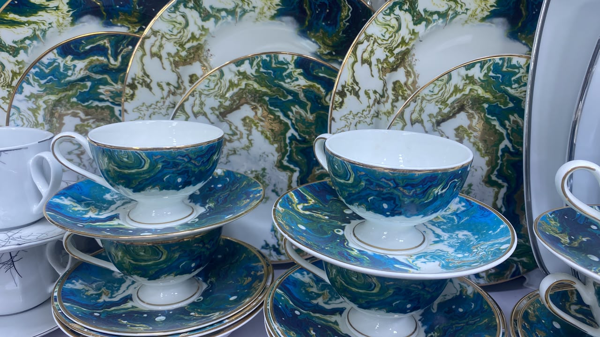
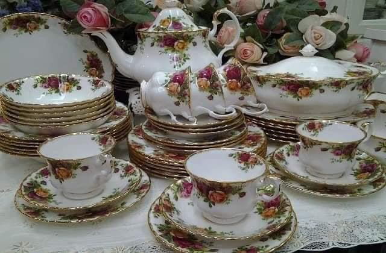

Curated, not crowded
Every pattern and appliance is chosen by hand, with an eye for quality that lasts beyond the season.
Baitul Mukarram · Dhaka
Luxury bone china dinner sets and cut-crystal glassware — hand-picked for the tables and celebrations of Dhaka.


Ocean Marble · Bone china
A family-run house of tableware & appliances
The house of Jahid
A dinner set is never only a dinner set. It is the table your family gathers around, the china you bring out for Eid, the pot that simmers through the afternoon.
At Jahid Crockeries we bring together the pieces that make those moments feel considered — from complete bone china services to the stove, hood and small appliances that keep a kitchen working beautifully.
Our storyEvery pattern and appliance is chosen by hand, with an eye for quality that lasts beyond the season.
Panasonic, Miyako, Franco, Jamaky and more — authentic products with the support you expect.
We help you choose the right piece, then stand behind it with practical after-sales care.
01 — The collection
Every dinner service and every glass on our shelves, photographed in the showroom. Dinner sets come in 32-piece and 52-piece services — tell us the occasion and we will help you choose.
Every set mixes & matches in store · individual pieces available
No pieces in this collection yet — try another filter.
Signature collection
Sculpted Grandeur · Classicals Ornament
A classical ornament service in white porcelain with 24-carat gold detailing and a sculpted tureen. Every piece is sold as a complete, ready-to-serve service — choose the size that fits your table.
Available in 32 pcs & 52 pcs
Dinner plates, side plates, bowls, cups and saucers, with serving pieces.
A fuller service with extra place settings, serving dishes and a covered tureen.
02 — Inside the showroom
A short walk through our shelves at Super “A” Market — the weight of the china, the finish of a stove, the colour of a glass. Then come and see them for yourself.
05 — Kind words
Families, restaurants and wedding shoppers have been setting their tables with us for years. Here is what a few of them say.
“We bought a 52-piece set for my daughter’s wedding. The quality is beautiful and they helped us choose the right pattern.”
“I came for one teapot and left with a full dinner set. No pressure, just good advice — and the prices were fair.”
“Our restaurant has been buying from Jahid bhai for years. Stoves, hoods, crockery — always genuine and always serviced.”
06 — Our story
Jahid Crockeries sits on the ground floor of Super “A” Market in Baitul Mukarram — a shop built on a simple idea: that good tableware and dependable appliances should be easy to find, fairly priced and properly explained.
Md. Jahid Hasan and his family have filled the shelves with bone china services, crystal glass, enamel cookware and trusted electrical brands. Some customers come for a single teapot; others furnish a whole dining room. Both are welcome.
“A beautiful table is not a luxury. It is a habit — and it starts with one good set.”
07 — Good to know
Still unsure? Call or WhatsApp us — we are happy to talk through patterns, sizes and delivery.
Ask on WhatsAppOur bone china services come in 32-piece and 52-piece sets. The 32-piece set suits a family table; the 52-piece service is the one to choose for weddings, entertaining and large gatherings. We can also mix and match individual pieces in store.
Our premium patterns — including the Mirana collection — use 24-carat gold detailing. As with all gold-decorated china, we recommend hand washing and avoiding the microwave to keep the finish beautiful for years.
Yes. We deliver across Dhaka city. Delivery charges depend on your area and the size of your order — message us on WhatsApp with your location and we will confirm the cost and timing before you pay.
Absolutely — and we recommend it. Come to the ground floor of Super “A” Market, Baitul Mukarram. You can hold the china, see the true colours and compare patterns side by side. We are open daily.
Yes. Sales and service are both part of what we do. If a stove, hood or small appliance needs attention, contact us and we will guide you on warranty and repair options.
We regularly prepare dinner sets for weddings and corporate gifting. Tell us your quantity, budget and preferred pattern, and we will put together options for you — including gift-ready packaging where available.
03 — Visit
Come and see the patterns in person — the weight of the china, the finish of a stove, the colour of a glass. We are on the ground floor of Super “A” Market, in the heart of Baitul Mukarram.
Open daily, 10am – 9pm
Call ahead on holidays for today’s hours.